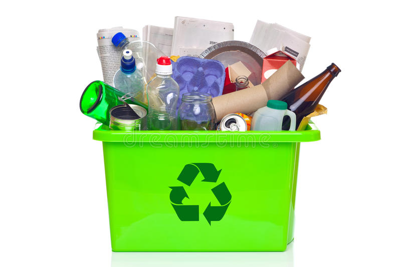

WEALTH FROM WASTE

RECYCLE
Recycling (and composting) This enables the materials you throw away to be used again by making them into new products.
Recycling is a series of steps that takes a used material and processes, remanufactures, and sells it as a new product. Begin recycling at home and at work:
Buy products made from recycled material. Look for the recycling symbol or ask store managers or salesmen. The recycling symbol means one of two things – either the product is made of recycled material, or the item can be recycled. For instance, many plastic containers have a recycling symbol with a numbered code the identifies what type of plastic resin it is made from. However, just because the container has this code does not mean it can be easily recycled locally.
Check collection centers and curbside pickup services to see what they accept, and begin collecting those materials. These can include metal cans, newspapers, paper products, glass, plastics and oil.
Consider purchasing recycled materials at work when purchasing material for office supply, office equipment or manufacturing.
Speak to store managers and ask for products and packaging that help cut down on waste, such as recycled products and products that are not over packaged.
Buy products made from material that is collected for recycling in your community.
Use recycled paper for letterhead, copier paper and newsletters.